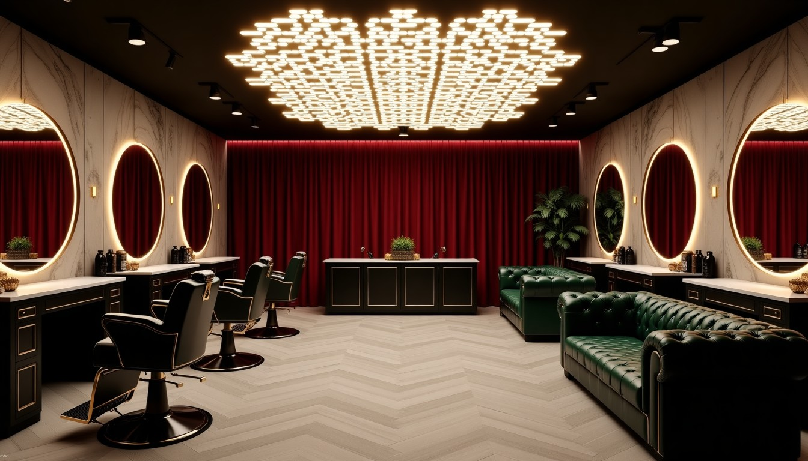
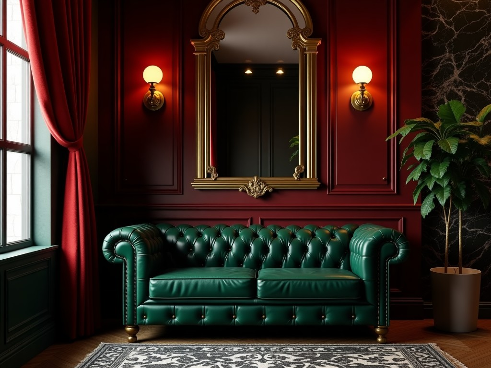
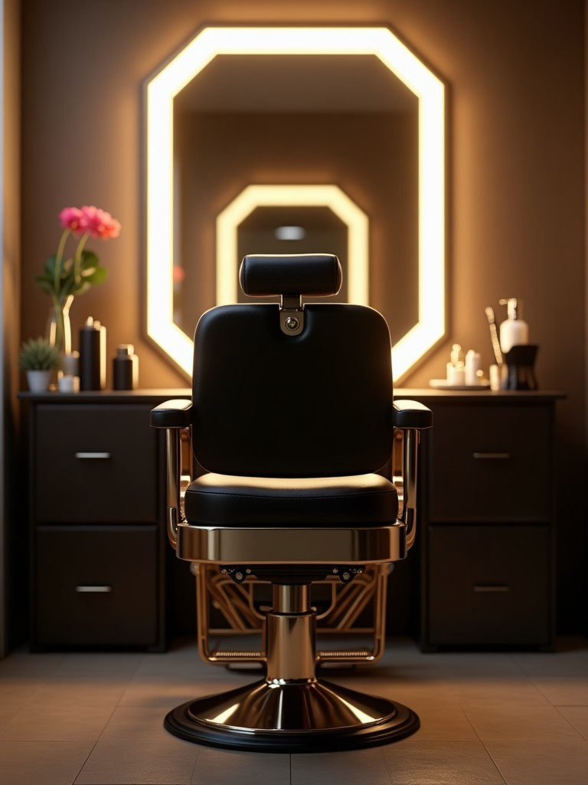

Serdar Güçsüz Barbershop için özel hazırlandı
Serdar Güçsüz Barbershop için 3 web sitesi tasarımı, hepsi çalışır hâlde
Instagram'da "DM for appointment" yazıyor; artık müşteriniz DM atmadan boş saati görüp randevusunu kendisi alsın. Telefonda açıp deneyin: randevu alın, yüz şeklinize göre model seçin, sadakat kartına damga ekleyin.

Seçenek 1 · Siyah Altın
Logonuzun siyah-altın renkleri; gece, LED ve lüks
Canlı aç →
Seçenek 2 · Chester
Dükkânınızdaki yeşil chester ve kırmızı perde; sıcak, klasik
Canlı aç →
Seçenek 3 · Mermer
Açık mermer zemin, siyah ve altın; ferah ve modern
Canlı aç →Berber sitelerinde neredeyse hiç olmayan, sizde çalışan özellikler:
- Online randevu: hizmet → gün → boş saat; gerçek çalışma saatlerinize göre, pazar kapalı. Onay WhatsApp'ınıza gelir, müşteri telefon takvimine ekler
- Canlı 'şu an açık / kapalı' durumu ve tahmini bekleme süresi
- Yüz şekline göre saç modeli: seçince yakışan 3 modelin fotoğrafı çıkar, beğendiği modelle doğrudan randevu
- Dijital sadakat kartı: 5 tıraşa 1 bedava (kâğıt kart kaybolmaz)
- 'Tıraşım ne zaman tazelenmeli' hatırlatıcısı: müşteri bir sonraki tıraşı unutmaz, size geri gelir
- Damat paketi + sağdıç grup randevusu, hediye çeki, Instagram videolarınız sitede, 360° dükkân görünümü, yol tarifi